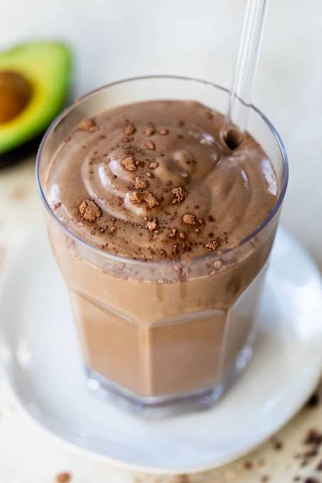

Home
Caiti's Smoothie

Description:
I eat this smoothie every morning for an easy, nutritious and filling meal.
Even for those with touchy stomach's in the morning, this smoothie's easy to get down and contains all the nutrients and macros you'll need to start the day.
Ingredients:
- 1 cup water
- 2 scoops chocolate protien powder
- 1 cup frozen banana
- 1 tbsp peanut butter
- Pinch of cinnamon
- Pinch of salt
Directions:
- Gather ingredients
- Fill blender cup halfway with water.
- Add remainder of ingredients.
- Blend in blender for at least one minute or until a uniform consistency.
- Place a heart shaped straw in the cup.
- Enjoy!